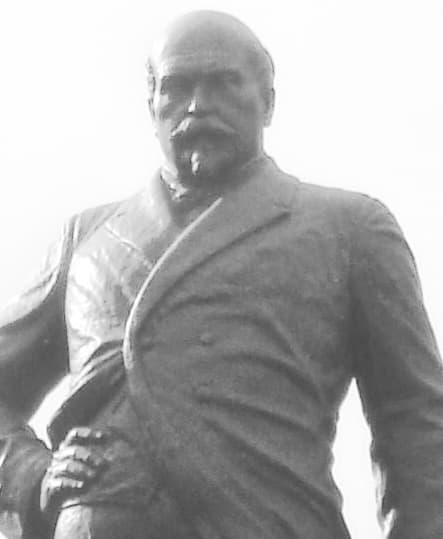

Citim în dicționar: „KOGĂLNICEANU, MIHAIL (1817-1891): om politic, istoric, scriitor, ziarist și orator” și pricepem că omul a fost prea mare pentru a-l cuprinde o foaie de gazetă. Căci, într-adevăr, nu s-a întîmplat dezastru în veacul al XIX-lea românesc la care tot mai venerabilul să nu fie puitor la cale și căpetenie.
Drept e că a și început de tînăr, numaidecît ce a primit „lumina” în Loja „Atheneul Străinilor” (de la Paris, firește). Și așa, luminat, anul masonic 1848 îl prinde pe baricadele jalnicei revoluții din Moldova (mai caraghioasă decît cea muntenească). Dar ce să scriem noi multe? Să-l lăsăm a grăi pe însuși acest titan al culturii și politicii noastre moderne! Căci iată ce proclamațiuni mesianice (iudaic vorbind) și într-aripate scria patriotul nostru, cuprins de sfînta mînie ciocoiască:
„Aristocraților! […] Toate funcțiile cele mari pînă la director de tribunal să se ocupe numai de mădulările acestor neamuri, și de bieții ciocoi [slujbași ai statului, birocrați], ale căror drepturi sînt de a vă izgoni pe voi, fiindcă a lor e țara și al lor e dreptul. […]
Vai vouă și vai copiilor voștri! Spuneți-ne, cruzilor, cum îndrăzniți a mai purta, după atîtea crime, pe buze, binele patriei și fraternitatea, voi cari sunteți răii-răilor, nelegiuiții-nelegiuiților! Voi, creaturile tartarului! Voi, demonii din adîncurile iadului! Voi, pe ale căror buze zace otravă din care Satana a alcătuit păcatul zavistiei! Voi, cari sunteți mașinele infernale ale tartarului! Voi, pe ale cărora frunte Satana și-a pus temeliile negrei sale împărății? Cutremurați-vă! Și iarăși zic, cutremurați-vă! - căci puțin încă și ora răzbunării va bate. Amar vouă atunci, tiranilor! Amar vouă! Să piară atunci dintre noi ticăloasa voastră ființă cum piere fumul și să se topească sămînța voastră cum se topește ceara în fața focului! Atunci veți vedea ce pot frații ciocoi în turbare, cînd vine timpul să-și răzbune asupra veneticilor, în țara lor, și asupra asupritorilor lor.”
Trebuie să înțelegem bine că „aristocrații” erau și ei Frați întru „Lumină”, dar pierduseră partida, fiindcă venise ceasul unei – vorba comuniștilor – „rotații de cadre”. Ne dăm seama de asta chiar din textul de mai sus, în care „aristocrații” sînt mustrați pentru cruzimea de a mai rosti „sacrele” cuvinte-cheie: „binele patriei” și „fraternitate”. Vremurile se schimbaseră: revoluția nu se mai făcea în saloane, la un ciubuc și un șerbet de trandafiri, ci pe ulițele podite cu scînduri sub care curgeau zoaiele și scîrna Bucureștiului încins și prăfuit. Acum era vremea „ciocoilor”, adică a acelor plebei hămesiți – alde Rosetti, alde Brătienii – care înțelegeau să-și răscumpere cu vîrf și îndesat mizeria și umilințele studenției pariziene1. Dar să citim mai departe cuvîntul onorabilului către Arhiereii Bisericii Ortodoxe Române:
„Să mă întorc acum și către voi, Preasfințiți Archierei, către voi, pe cari am fi dorit cu mulțumire, cu o mulțumire săpată în adîncurile inimii unor adevărați români, a vă vedea în capul religiei noastre, predicînd într-o parte și într-alta, în mijlocul turmei pe care v-a încredințat-o Părintele tuturor, pace, iubire de dreptate și iubire către altul; căci numai prin aceste trei mari prințipuri, dictate de Domnul nostru Iisus Christos prin sfînta sa Evanghelie, se poate organisa fericirea unui popor… De veți urma a mai fi instrumente la spurcatele lor planuri [ale „aristocraților” adică]… Atunci, atunci - în loc de a vă numi următorii lui Christos, veți fi apostolii lui Antichrist!”2
Dacă tot am pornit pe această cale a citatelor nerușinate, să zicem că M. K. nu-i îndrăgea numai pe ciocoi, ci și pe țigani. Avea numai douăzeci de ani cînd a scris Schiță asupra istoriei, obiceiurilor și limbii țiganilor cunoscuți în Franța sub numele de „boemieni”. Iar mai tîrziu zicea așa, ca să fie auzit de Europa și aceea să plîngă și să dea niște „hotărîri” și „recomandări” împotriva barbariei Românilor (deși – să nu uităm! - sîntem mult înaintea semnării tratatului de la Lisabona):
„Pe străzile Iașului tinereții mele, am văzut ființe umane purtînd lanțuri la mîini și picioare, altele cu cercuri de fier în jurul frunții și încă altele cu zgărzi de metal la gît. Să fii bătut cu cruzime și să primești și alte pedepse - cum ar fi înfometarea, fiind agățat deasupra unui foc ce fumegă, să fii întemnițat de unul singur și aruncat gol în zăpadă sau în rîuri înghețate - aceasta era soarta nenorocitului Țigan. Instituția sacră a familiei era de asemenea batjocorită: femeile erau smulse de lîngă soții lor și fetele de la părinții lor. Copiii erau rupți de la sînul celor care i-au adus pe lume, despărțiți de mamele lor, și de tați și unul de altul și vînduți unor cumpărători osebiți din cele patru colțuri ale României, ca vitele. Nici umanitatea, nici sentimentul religios, nici măcar dreptul civil nu le oferea protecție acestor ființe. Era o priveliște teribilă și strigătoare la Cer.”
Comisarul european M. K. a fost apoi căpetenia unioniștilor la 1859: membru în Comitetul Central al Unirii (tuturor vrăjmașilor Românilor împotriva Românilor), a condus propaganda pentru unire în paginile Stelei Dunării (ziarul Lojei cu același nume), a indrumat lucrările Adunării ad-hoc a Moldovei. Dar lucrarea cea mai vrednică de pomenire a lui M. K. este, fără îndoială, aceea împotriva Bisericii lui Hristos, ca mînă dreaptă a fratelui său întru răutăți Cuza Vodă, al cărui cuvînt de laudatio l-am săvîrșit nu cu multă vreme în urmă. Să ne aducem aminte ce scriam cu acel prilej despre lucrarea de nimicire a Sfintelor Mănăstiri Neamțu și Secu. Căci, chiar dacă repetăm unele lucruri, e bine așa, pentru a ne lămuri cine au fost „înaintașii” noștri (iar mai bine zis înaintașii celor care le sînt acum urmași). Deci să citim iarăși din cronica ieromonahului Andronic Popovici:
„Deci tot în anul 1859, octombrie 18, mergînd din nou la Mănăstirea Neamțului și sfătuindu-se cu Sofronie Vîrnav și cu ajutorii săi, ministrul bisericesc Alexandru Tiriachiul a mers la părintele stareț Gherasim și a început a zice: Să poruncești a scoate afară din soborniceasca biserică pravila ce se săvîrșește în limba slavonă! Iar starețul nu s-a învoit nicidecum. Atunci ministrul, izbind cu pumnul de trei ori în masa din casa starețului, a strigat la sfinția sa: Numaidecît să săvîrșești această bună voire și hotărîre a guvernului! Și părintele stareț i-a spus lămurit că el nu este pus stareț ca să strice rînduielile mănăstirii, ci ca să le păzească nestrămutate, precum sînt așezate de Preacuviosul Părintele nostru Stareț Paisie Velicicovschi, arătînd și către icoana Preafericitului Stareț cu mîna. Și așa, ieșind ministrul și cu comitetul din chiliile stărețești cu multe [amenințări] tirănești, au mers cu toții în soborniceasca biserică și – cu mare obrăznicie, și cu vorbe tiranești, și rîsuri – au început a smulge din strană sfintele cărți slavonești. Și, scoțîndu-le pe acestea afară, s-au pus îndată prin trăsuri și au alergat și la Mănăstirea Secului întru aceeași zi, făcînd și acolo aceeași batjocură în biserica lui Dumnezeu.
Apoi, tot întru această vreme, au luat de la mănăstire și mașina tipografică cu toate instrumentele, întru o zi de Duminică, nelăsînd nici măcar pînă ce se va sfîrși cartea slujbei Dumnezeieștii Liturghii, care atunci începuse a se tipări. Și încă Mihail Kogălniceanu îi silnicea pe părinții tipografi ca să o desfacă și să o încarce ei înșiși, dar părinții nu s-au învoit a face aceasta nici într-un chip, ci se rugau neîncetat să se milostivească și să lase mașina măcar pînă ce se va isprăvi de tipărit Liturghia, din care abia o duiumă3 era gata. Însă ei nu numai că nu s-au milostivit a lăsa lucrul cel drept al soborului, ci îndată au adus jidovi4, care au desfăcut mașina și au încărcat-o, luînd-o în folosul lor și suduindu-i pe călugări tot de cruci și de răscruci. Asemenea, tot cu tiranie au luat și instrumentele legătoriei și ale turnătoriei [de litere], încă și un teanc nou de hîrtie pentru tipărit; și mașinile de lucrat postavul trebuitor pentru hainele soborului acestei lavre. […]
Apoi în anul 1860, Sofronie Vîrnav a bătut telegraful din tîrgul Piatra, cerînd de la guvern voie grabnică să surghiunească din sobor pe cîți părinți va voi el; și a dobîndit putere nemărginită, prin mijlocirea lui Costică Cerchez, ce era înțeles cu dînsul mai dinainte. Și așa – luîndu-l pe ispravnicul de ținut (ce era văr cu dînsul, anume Scarlat Vîrnav) și venind în mănăstire cu mulțime de jandarmi, în 21 april – îndată fără de veste a închis sub caraul5 șapte părinți proiestoși. Iar părintele stareț Gherasim și cu tot soborul, văzînd această cumpliție fără de omenie, s-a îngrozit foarte. Și, nedumerindu-se ce este, s-a sfătuit cu părinții duhovnici, și au mers cu toții împreună în arhondaricul cel mare al mănăstirii și au început a-l ruga pe ispravnic să spună care e pricina de i-a închis sub arest pe acei părinți așa, nejudecați. Și el a răspuns că lui așa-i este poruncit și numai comitetul din mănăstire știe [de ce]. Deci părintele stareț Gherasim l-a întrebat și pe ticălosul Sofronie, fiind de față, ca să spună ce vinovăție au făcut părinții aceia puși sub arest. Iar el, în fața ispravnicului și a altor persoane, a început a ocărî și pe starețul, și pe toți părinții duhovnici cu cele mai mari defăimări. Și îndată a pus jandarmi și la ușa clopotniței, hotărînd să nu mai suie nimeni la toacă sau la clopote fără învoirea ispravnicului. Asemenea, a pus și împrejurul a toată mănăstirea vreo 40 de plăieși cu puștile și a scos vorbe în sobor că are să surghiunească 50 de călugări. Iar în 22 april – nejudecîndu-i pentru nimic pe acei șapte călugări, ci numai scoțîndu-le nume că sînt bostangii – i-a surghiunit cu nepovestite silnicii tirănești, înconjurați de jandarmi. Și după aceasta, tot prin mașinăriile acestui ticălos Sofronie (întru același an 1860, la 20 iulie), s-a făcut judecată nedreaptă asupra preacuvioșiei sale părintelui nostru arhimandrit și stareț Gherasim, de către boierul Grigorie Cuza, moșul [unchiul] lui Alexandru Cuza, și s-a și scos din stăreție.
Și apoi, mergînd de două ori la Prea Sfințitul Mitropolit Sofronie, acel Sofronie [Vîrnav] l-a rugat să-l hirotonească ierodiacon. Dar – neînvoindu-se nicidecum Mitropolitul la această cerere vicleană a lui, știindu-l nevrednic (pentru că mai făcuse și vreo două ucideri) – el i-a proiectat îndată surghiunirea. Și așa – întru același an, luna lui noiembrie în 8 zile, în vremea Dumnezeieștii Liturghii – ministrul primar Mihail Kogălniceanu, și Costică Cerchez și alți mulți tovarăși ai lor, mergînd la Mitropolie cu mulțime de jandarmi, l-au luat fără de veste cu tirănească neomenie pe Prea Sfințitul Mitropolit, fără să-l mai lase să-și pună ceva la cale sau să-și ia cu sine pe cineva din tagma duhovnicească. Și, punîndu-l întru o trăsură înconjurat de jandarmi cu săbiile scoase, l-au dus cu mare nemilostivire și grăbire în surghiun la Mănăstirea Slatina. Și tot atunci (întru a 14-a zi din noiembrie) – venind la mănăstire arhiereul Vladimir Suhopan6 și ministrul bisericesc Alexandru Romalo, cu Gheorghe comandirul de ținut cu ai săi jandarmi, și punînd caraul de șase jandarmi deodată la chilia starețului – a doua zi de noapte l-au dus înconjurat de jandarmi în surghiun la Sfînta Mănăstire Coșula, și acolo l-au pus sub mare strajă.”
Multe ar mai fi de zis pentru această urîcioasă dihanie (care se lăuda că ar fi avut mai mult de 700 de femei, trecute pe carnet), dar trebuie să facem loc pozelor acelei deosebit de urîte statui din piața cu același nume.

Note
1 Citiți corespondența lui Rosetti sau a lui Bălcescu. Le plîngi de milă.
2 Anul 1648 în Principatele Românești, Acte și documente publicate cu ajutorul comitetului pentru rădicarea monumentului lui Ioan C. Brătianu, Tomul I — 821.1848, București, Institutul de Arte Grafice „Carol Gobl”, 1902.
3 Aici, tiraj al unei coli tipografice.
4 Ca unii ce erau și mecanici pricepuți, și urîtori de Hristos și de Dumnezeiasca Lui Liturghie.
5 santinelă, strajă.
6 Un alt membru al taberei unioniste dintre clericii grupați în jurul lui Alexandru Ioan Cuza.
Comentarii